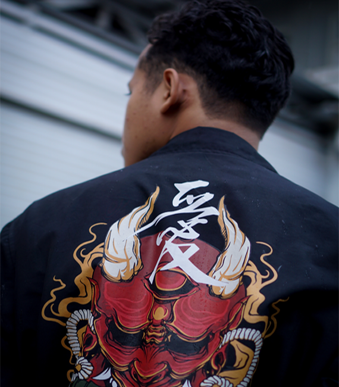
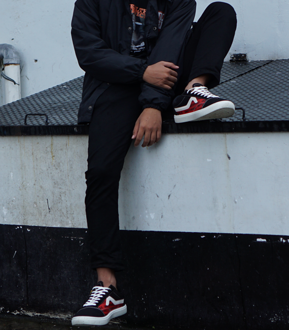
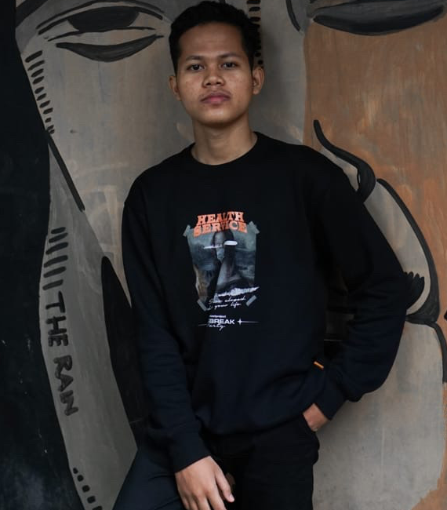
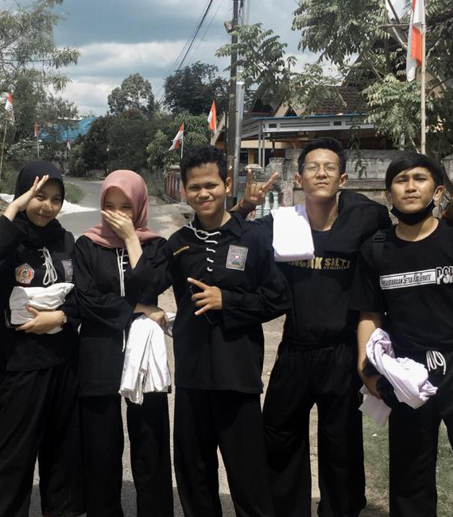

Tentang
Pencapaian
Juara II Lomba Kompetensi Siswa SMK Tingkat Provinsi Kalimantan Selatan Bidang Lomba IT Network System Administration
Pendidikan
SD Negeri 08 Medan
SMP Negeri 11 Banjarmasin
SMK Yayasan Pendidikan Teknologi Banjarmasin
STMIK Banjarbaru


Galeri



